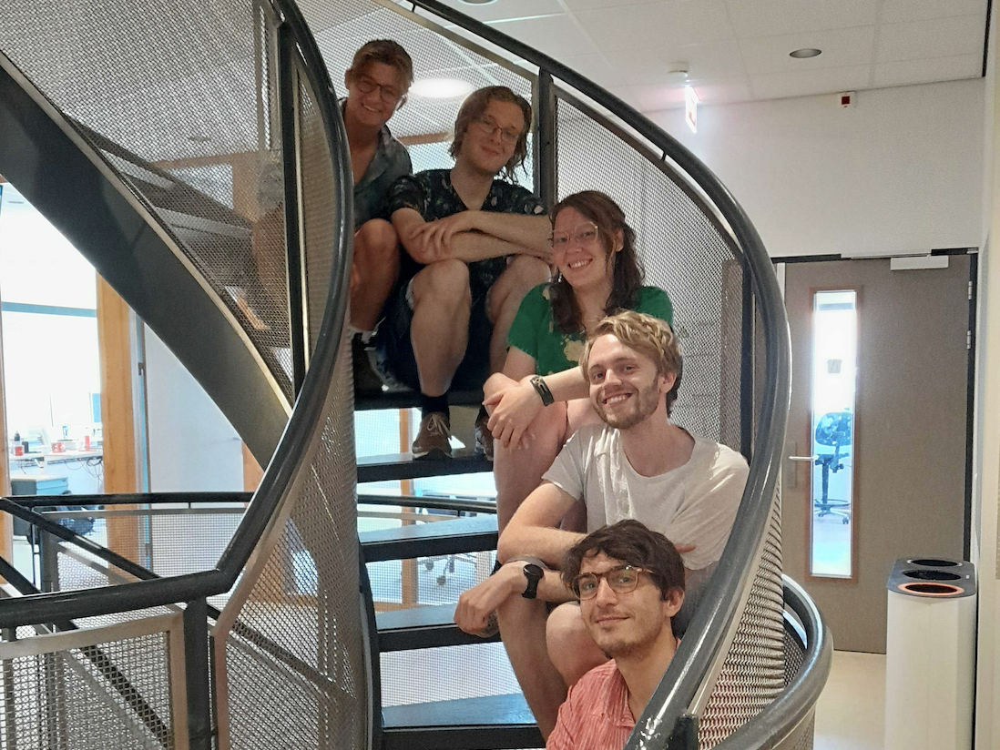
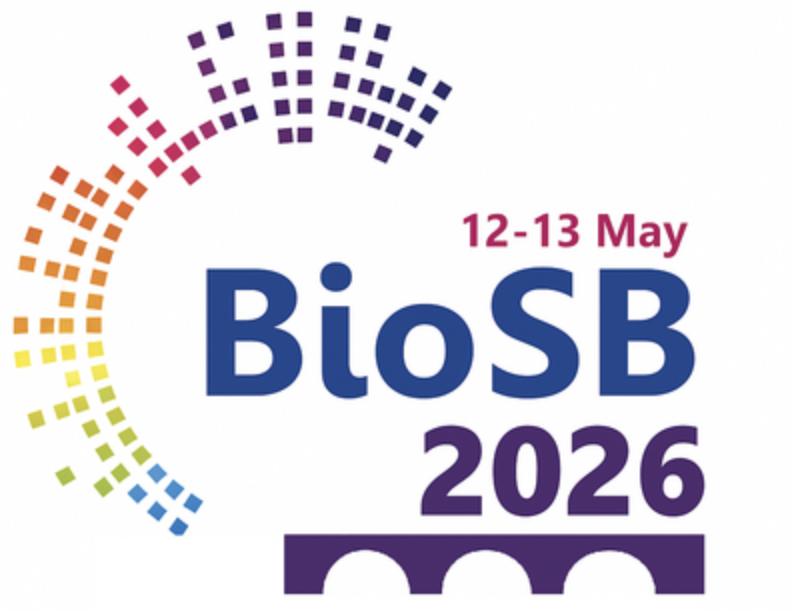
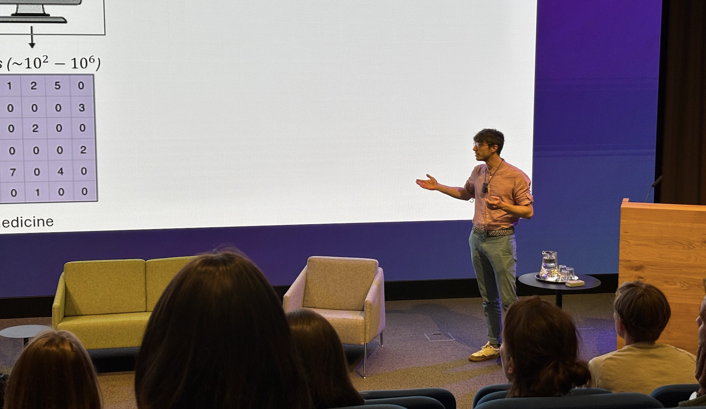
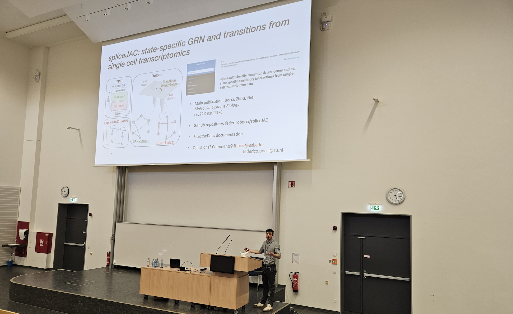
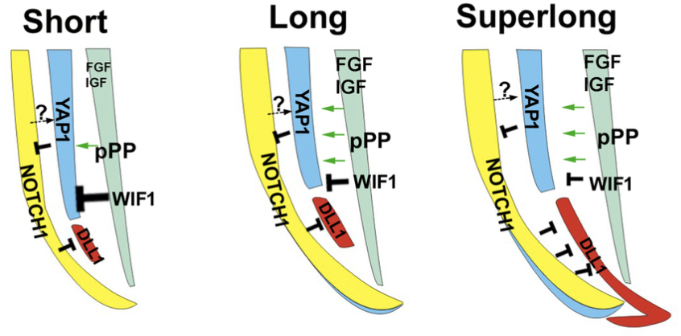
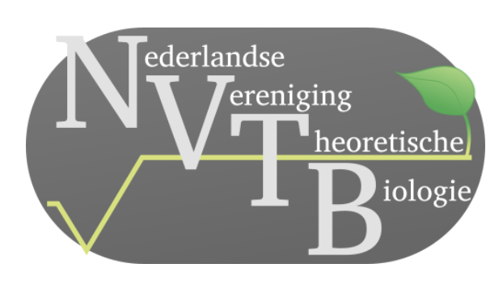
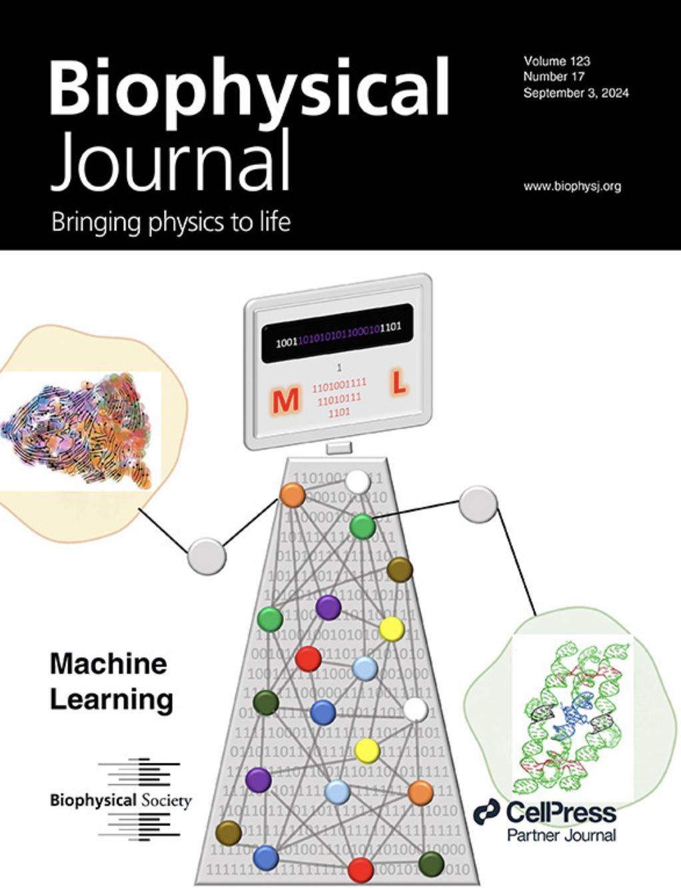

2026

September 2026:
Santhosh (PhD student), Michiel (Master student),
and Lisanne (Master student) join the group!
September 2026:
Federico joins the
Radboud Young Academy”.

August 2026:
The paper
“Robust identification of cell-cell communication
heterogeneity in single cells”
is out in Cell Systems.
July/August 2026:
Olivier (Master student), Iris (Bachelor student),
and Sverre (Master student) conclude their internship
in the group.

May 2026:
Federico joins and is part of the organizing committee
for the
2026 Bioinformatics & Systems Biology (BioSB)
conference
.
May 2026:
Federico visits and gives a talk at the
Bellvitge Biomedical Research Institute (IDIBELL)
,
Barcelona.

May 2026:
Federico gives a keynote lecture at the
single cell Netherlands (scNL) 2026 annual conference
about "a RICH representation of cell-cell communication
heterogeneity in single cells".

March 2026:
Federico gives a keynote lecture at the
2nd Bonn conference on mathematical life science
about "Navigating the attractor landscape of single cells".
2025

August 2025:
Yunong joins the group as a visiting master student
from Capital Normal University.

August 2025:
The paper
Regulation of feather length: FGF/IGF signaling
and NOTCH/YAP modulation of progenitor cell topology
in collaboration with Cheng-Ming Chuong's lab (USC)
is out in Science Advances.
July 2025:
Federico co-organizes the
international workshop
on Systems learning of single cells at the Beijing
International Center for Mathematical Research.

June 2025:
Federico gives a talk at the
Dutch Society for Theoretical Biology
.

March 2025:
Nynke joins the group as a PhD candidate.
2024

September 2024:
The paper
“Tipping points in epithelial-mesenchymal lineages
from single-cell transcriptomics data”
is out and on the cover of Biophysical Journal.
June 2024:
The computational cell fate group is officially open!